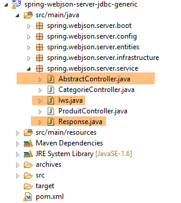
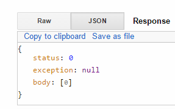

17. عرض قاعدة بيانات على الويب
17.1. بنية خدمة الويب/JSON
سنقوم بتنفيذ البنية التالية:
 |
- في [1]، يتم تنفيذ طبقات [DAO، [JPA]، JDBC] باستخدام أحد التكوينات الـ 24 المعروضة في الفصول السابقة، ولا سيما في الفقرة 15؛
- تنفذ طبقة [DAO] [3] للعميل البعيد نفس واجهة طبقة [DAO] [1]، مما يسمح لنا باستخدام نفس طبقة الاختبار كما في الفصول السابقة. وكأن الطبقات [2-3] شفافة بالنسبة للطبقة [4]؛
سنعتمد على المشاريع التالية:
- مشروع [sgbd-config-jdbc]، الذي يقوم بتكوين طبقة JDBC لأحد أنظمة إدارة قواعد البيانات الستة؛
- مشروع [sgbd-config-jpa-*]، الذي يقوم بتكوين طبقة JPA لنظام إدارة قواعد البيانات (DBMS) المحدد لأحد تطبيقات JPA الثلاثة التي تمت دراستها (Hibernate، EclipseLink، OpenJpa)؛
- المشروع العام [spring-jdbc-04]، الذي ينفذ طبقة [DAO] [1]؛
- المشروع العام [spring-jpa-generic] الذي ينفذ طبقة [DAO] [2]؛
- المشروع العام [spring-webjson-server-jdbc-generic]، الذي ينفذ خدمة ويب تستند إلى مشروع [spring-jdbc-04]؛
- المشروع العام [spring-webjson-server-jpa-generic]، الذي ينفذ خدمة ويب تستند إلى مشروع [spring-jpa-generic]؛
- العميل العام [spring-webjson-client-generic]، الذي سيكون العميل الوحيد لجميع تكوينات خدمات الويب الـ 24؛
17.2. إعداد بيئة التطوير
سنعمل مع المكونات التالية:
- قاعدة بيانات MySQL 5.6.25؛
- تنفيذ Hibernate JPA؛
استيراد المشاريع التالية إلى STS:
 |
- يمكن العثور على مشاريع [spring-webjson-*] في المجلد [<examples>\spring-database-generic\spring-webjson]؛
- اضغط على [Alt-F5] ثم أعد إنشاء جميع المشاريع المذكورة أعلاه؛
للتحقق من تثبيت بيئة التطوير بشكل صحيح، اتبع الخطوات التالية:
- ابدأ خدمة الويب باستخدام تكوين وقت التشغيل [spring-webjson-server-jpa-generic-hibernate]، الذي يعتمد على تطبيق JPA/Hibernate؛
 |  |
ثم:
- قم بتشغيل عميل خدمة الويب هذه باستخدام تكوين وقت التشغيل [spring-webjson-client-generic]، وهو اختبار JUnit:
 |  |
يجب أن ينجح الاختبار:
 |
- في [1]، أوقف خدمة الويب، ثم قم بتشغيل خدمة الويب باستخدام تكوين وقت التشغيل [spring-webjson-server-jdbc-generic]، الذي يعتمد على تطبيق JDBC:
 |  |
ثم قم بتشغيل العميل لهذه الخدمة الويب باستخدام تكوين وقت التشغيل [spring-webjson-client-generic]:
| |
يجب أن ينجح الاختبار:
 |
17.3. تنفيذ خدمة الويب / JSON / JDBC
سنركز أولاً على البنية التالية:
 |
حيث تتواصل طبقة [DAO] [1] مباشرة مع طبقة JDBC في نظام إدارة قواعد البيانات (DBMS).
17.3.1. مشروع Eclipse لخدمة الويب
مشروع Eclipse لخدمة الويب / JSON / JDBC هو كما يلي:
 |
إنه مشروع Maven يحتوي على ملف [pom.xml] كما يلي:
<project xmlns="http://maven.apache.org/POM/4.0.0" xmlns:xsi="http://www.w3.org/2001/XMLSchema-instance"
xsi:schemaLocation="http://maven.apache.org/POM/4.0.0 http://maven.apache.org/xsd/maven-4.0.0.xsd">
<modelVersion>4.0.0</modelVersion>
<groupId>dvp.spring.database</groupId>
<artifactId>spring-webjson-server-jdbc-generic</artifactId>
<version>0.0.1-SNAPSHOT</version>
<name>spring-webjson-server-jdbc-generic</name>
<description>démo spring mvc</description>
<parent>
<groupId>org.springframework.boot</groupId>
<artifactId>spring-boot-starter-parent</artifactId>
<version>1.2.3.RELEASE</version>
</parent>
<dependencies>
<!-- web layer -->
<dependency>
<groupId>org.springframework.boot</groupId>
<artifactId>spring-boot-starter-web</artifactId>
</dependency>
<!-- layer [DAO] -->
<dependency>
<groupId>dvp.spring.database</groupId>
<artifactId>spring-jdbc-generic-04</artifactId>
<version>0.0.1-SNAPSHOT</version>
</dependency>
</dependencies>
<!-- plugins -->
<build>
<plugins>
<plugin>
<groupId>org.apache.maven.plugins</groupId>
<artifactId>maven-surefire-plugin</artifactId>
<version>2.18.1</version>
</plugin>
</plugins>
</build>
</project>
- الأسطر 11–15: مشروع Maven الأصلي؛
- الأسطر 24–28: التبعية لطبقة [DAO / JDBC] التي ينفذها مشروع [spring-jdbc-generic-04]؛
- الأسطر 19–22: التبعية على عنصر [spring-boot-starter-web]. يتضمن هذا العنصر جميع التبعيات اللازمة لإنشاء خدمة ويب / JSON. كما يتضمن مكتبات غير ضرورية. لذا، سيكون من الضروري إجراء تكوين أكثر دقة، لكن هذا التكوين مفيد للبدء.
التبعيات التي يقدمها هذا التكوين هي كما يلي:
 |  | 1  |
- في [1]، يمكننا أن نرى أن Eclipse قد اكتشف التبعية لأرشيف مشروع [spring-jdbc-generic-04]؛
التبعيات المذكورة أعلاه هي تبعيات كل من طبقة [DAO] وطبقة [web].
17.3.2. تكوين طبقة [web]
يتم تكوين طبقة [web] بواسطة ملفين من ملفات تكوين Spring:
 |
17.3.2.1. فئة [WebConfig]
تتمثل المهمة الرئيسية لفئة [WebConfig] في تكوين:
- خادم Tomcat الذي سيتم نشر خدمة الويب عليه؛
- مرشحات JSON لتسلسل وإلغاء تسلسل كائنات [Product] و[Category]:
package spring.webjson.server.config;
import java.util.List;
import org.springframework.beans.factory.annotation.Autowired;
import org.springframework.beans.factory.config.ConfigurableBeanFactory;
import org.springframework.boot.context.embedded.EmbeddedServletContainerFactory;
import org.springframework.boot.context.embedded.ServletRegistrationBean;
import org.springframework.boot.context.embedded.tomcat.TomcatEmbeddedServletContainerFactory;
import org.springframework.context.ApplicationContext;
import org.springframework.context.annotation.Bean;
import org.springframework.context.annotation.Configuration;
import org.springframework.context.annotation.Scope;
import org.springframework.http.converter.HttpMessageConverter;
import org.springframework.http.converter.json.MappingJackson2HttpMessageConverter;
import org.springframework.web.context.WebApplicationContext;
import org.springframework.web.servlet.DispatcherServlet;
import org.springframework.web.servlet.config.annotation.EnableWebMvc;
import org.springframework.web.servlet.config.annotation.WebMvcConfigurerAdapter;
import com.fasterxml.jackson.databind.ObjectMapper;
import com.fasterxml.jackson.databind.ser.impl.SimpleBeanPropertyFilter;
import com.fasterxml.jackson.databind.ser.impl.SimpleFilterProvider;
@Configuration
@EnableWebMvc
public class WebConfig extends WebMvcConfigurerAdapter {
// -------------------------------- layer configuration [web]
@Autowired
private ApplicationContext context;
@Bean
public DispatcherServlet dispatcherServlet() {
DispatcherServlet servlet=new DispatcherServlet((WebApplicationContext) context);
return servlet;
}
@Bean
public ServletRegistrationBean servletRegistrationBean(DispatcherServlet dispatcherServlet) {
return new ServletRegistrationBean(dispatcherServlet, "/*");
}
@Bean
public EmbeddedServletContainerFactory embeddedServletContainerFactory() {
return new TomcatEmbeddedServletContainerFactory("", 8081);
}
// -------------------------------- configuration filters [json]
...
}
- السطر 25: الفئة هي فئة تكوين Spring؛
- السطر 26: تشير العلامة [@EnableWebMvc] إلى أن طبقة الويب يتم تنفيذها باستخدام Spring MVC. سيؤدي هذا إلى تشغيل تكوينات ضمنية لن نضطر إلى إعدادها؛
- السطران 30-31: حقن سياق Spring للتطبيق؛
- الأسطر 33–37: تعريف حبة [dispatcherServlet]، التي تعمل، في تطبيقات Spring MVC، كـ [FrontController]، ودورها هو توجيه طلبات العميل إلى وحدة التحكم القادرة على معالجتها؛
- الأسطر 39-42: يتم تسجيل خدمة الويب servlet مع عناوين URL التي تتعامل معها. هنا كتبنا [/*]، مما يعني جميع عناوين URL؛
- الأسطر 44–47: تعريف bean [embeddedServletContainerFactory]، الذي يحدد خادم الويب المطلوب استخدامه. في هذه الحالة، سيكون خادم الويب Tomcat [http://tomcat.apache.org/]. يمكنك أيضًا استخدام خادم Jetty [http://www.eclipse.org/jetty/]. كلاهما خادمان مدمجان مدرجان في تبعيات Maven. عندما يبدأ [Spring Boot] تشغيل المشروع، فإنه يبدأ تلقائيًا خادم الويب المحدد في التكوين وينشر الخدمة أو تطبيق الويب عليه؛
يتم تكوين مرشحات JSON على النحو التالي:
package spring.webjson.server.config;
import java.util.List;
...
@Configuration
@EnableWebMvc
public class WebConfig extends WebMvcConfigurerAdapter {
// -------------------------------- layer configuration [web]
...
// -------------------------------- configuration filters [json]
// mapping jSON
@Bean
public MappingJackson2HttpMessageConverter mappingJackson2HttpMessageConverter() {
final MappingJackson2HttpMessageConverter converter = new MappingJackson2HttpMessageConverter();
final ObjectMapper objectMapper = new ObjectMapper();
converter.setObjectMapper(objectMapper);
return converter;
}
@Override
public void configureMessageConverters(List<HttpMessageConverter<?>> converters) {
converters.add(mappingJackson2HttpMessageConverter());
super.configureMessageConverters(converters);
}
// filters jSON
@Bean
public ObjectMapper jsonMapper(MappingJackson2HttpMessageConverter mappingJackson2HttpMessageConverter) {
return mappingJackson2HttpMessageConverter.getObjectMapper();
}
@Bean
@Scope(value = ConfigurableBeanFactory.SCOPE_PROTOTYPE)
ObjectMapper jsonMapperShortCategorie(MappingJackson2HttpMessageConverter mappingJackson2HttpMessageConverter) {
ObjectMapper jsonMapper = jsonMapper(mappingJackson2HttpMessageConverter);
jsonMapper.setFilters(new SimpleFilterProvider().addFilter("jsonFilterCategorie",
SimpleBeanPropertyFilter.serializeAllExcept("produits")));
return jsonMapper;
}
@Bean
@Scope(value = ConfigurableBeanFactory.SCOPE_PROTOTYPE)
ObjectMapper jsonMapperLongCategorie(MappingJackson2HttpMessageConverter mappingJackson2HttpMessageConverter) {
ObjectMapper jsonMapper = jsonMapper(mappingJackson2HttpMessageConverter);
jsonMapper.setFilters(new SimpleFilterProvider().addFilter("jsonFilterCategorie",
SimpleBeanPropertyFilter.serializeAllExcept()).addFilter("jsonFilterProduit",
SimpleBeanPropertyFilter.serializeAllExcept("categorie")));
return jsonMapper;
}
@Bean
@Scope(value = ConfigurableBeanFactory.SCOPE_PROTOTYPE)
ObjectMapper jsonMapperShortProduit(MappingJackson2HttpMessageConverter mappingJackson2HttpMessageConverter) {
ObjectMapper jsonMapper = jsonMapper(mappingJackson2HttpMessageConverter);
jsonMapper.setFilters(new SimpleFilterProvider().addFilter("jsonFilterProduit",
SimpleBeanPropertyFilter.serializeAllExcept("categorie")));
return jsonMapper;
}
@Bean
@Scope(value = ConfigurableBeanFactory.SCOPE_PROTOTYPE)
ObjectMapper jsonMapperLongProduit(MappingJackson2HttpMessageConverter mappingJackson2HttpMessageConverter) {
ObjectMapper jsonMapper = jsonMapper(mappingJackson2HttpMessageConverter);
jsonMapper.setFilters(new SimpleFilterProvider().addFilter("jsonFilterProduit",
SimpleBeanPropertyFilter.serializeAllExcept()).addFilter("jsonFilterCategorie",
SimpleBeanPropertyFilter.serializeAllExcept("produits")));
return jsonMapper;
}
}
- السطر 8: تمتد فئة [WebConfig] إلى فئة [WebMvcConfigurerAdapter]. تقوم الفئة الأخيرة بتكوين تطبيق الويب بالقيم الافتراضية. عندما تريد تخصيص هذا التكوين، يجب عليك تجاوز طرق معينة من هذه الفئة. هنا، نريد تجاوز طريقة [configureMessageConverters] في الأسطر [22–26] (لاحظ تعليق @Override)، والتي تحدد قائمة بـ "المحولات". تتبادل خدمة الويب/JSON وعميلها أسطر النص. المحول هو أداة قادرة على إنشاء كائن من سطر نصي مستلم (إلغاء التسلسل) وإنشاء سطر نصي من كائن (التسلسل). هنا، ستكون أسطر النص سلاسل JSON. لذلك سنشير إلى تسلسل/إلغاء تسلسل JSON؛
- السطر 23: تأخذ طريقة [configureMessageConverters] قائمة بالمحولات كمعلمة؛
- السطران 24-25: يُضاف محول JSON [MappingJackson2HttpMessageConverter] من الأسطر [14-20] إلى هذه القائمة. سيمكّن هذا من تبادل JSON بين العميل والخادم؛
- الأسطر [14-20]: تحدد محول JSON الذي تنفذه فئة [MappingJackson2HttpMessageConverter]. يمكن العثور على هذه الفئة (السطر 10) في تبعيات Maven الخاصة بالمشروع؛
- السطور [17-18]: يتم إنشاء مخطط JSON وتعيينه إلى [MappingJackson2HttpMessageConverter]؛
- الأسطر [29-32]: تحدد أداة تعيين JSON التي تم إنشاؤها في السطر 17 كحبة Spring. وهذا يضعها في سياق Spring ويجعلها متاحة ليتم حقنها في حبات أخرى أو استخدامها في كود تطبيق الويب؛
- الأسطر 34-41: تعريف مرشح JSON لمُخطط JSON السابق؛
- السطر 35: يضمن التعليق التوضيحي [@Scope(value = ConfigurableBeanFactory.SCOPE_PROTOTYPE)] أن الحبة المحددة هنا ليست فريدة. في كل مرة يتم طلبها من السياق، سيتم إعادة تنفيذ الطريقة [jsonMapperCategoryWithoutProducts]. وهذا ضروري هنا لأننا نحدد أربعة مرشحات JSON. ومع ذلك، يجب أن يكون واحد فقط نشطًا في أي وقت معين. من خلال إعطاء الفول نطاق [ConfigurableBeanFactory.SCOPE_PROTOTYPE]، نضمن إعادة تنفيذ الطريقة واستبدال المرشح السابق بالمرشح الجديد؛
- لفهم هذه المرشحات، تذكر أنه في طبقة [DAO]:
- تم توضيح الكيان [Product] بالتعليق التوضيحي [jsonFilterProduct]؛
- تم توضيح الكيان [Category] بعلامة [jsonFilterCategory]؛
لذلك يجب علينا تعريف مرشحات بهذه الأسماء.
- الأسطر [34-41]: تعريف مرشح يسمى [jsonMapperShortCategorie] يوفر تمثيل JSON لفئة بدون منتجاتها؛
- الأسطر [43-51]: تعريف مرشح يسمى [jsonMapperLongCategory] يوفر تمثيل JSON لفئة مع منتجاتها؛
- الأسطر [53-60]: تعريف مرشح يسمى [jsonMapperShortProduct] يوفر تمثيل JSON لمنتج بدون فئته؛
- الأسطر [62-70]: تعريف مرشح يسمى [jsonMapperLongProduct] يوفر تمثيل JSON لمنتج مع فئته؛
17.3.2.2. فئة [AppConfig]
تقوم فئة [AppConfig] بتكوين التطبيق بأكمله، أي طبقتي [web] و [DAO]:
package spring.webjson.server.config;
import org.springframework.context.annotation.ComponentScan;
import org.springframework.context.annotation.Configuration;
import org.springframework.context.annotation.Import;
@Configuration
@ComponentScan(basePackages = { "spring.webjson.server.service" })
@Import({ spring.jdbc.config.AppConfig.class, WebConfig.class })
public class AppConfig {
}
- السطر 7: الفئة هي فئة تكوين Spring؛
- السطر 9: نقوم باستيراد الحبوب من طبقة [DAO / JDBC] بالإضافة إلى تلك المحددة بواسطة فئة [WebConfig]. وبالتالي، ستكون جميع الحبوب من طبقة [DAO] متاحة في تطبيق الويب/JSON؛
- السطر 8: يحدد الحزم التي يمكن العثور فيها على حبات Spring الأخرى؛
17.3.3. [ServerException]
 |
تمامًا كما في الفصول السابقة، حيث قامت طبقة [DAO] بإلقاء استثناء [DaoException] لم يتم التقاطه، ستقوم طبقة [web] بإلقاء استثناء [ServerException] لم يتم التقاطه:
package spring.webjson.server.infrastructure;
import generic.jdbc.infrastructure.UncheckedException;
public class ServerException extends UncheckedException {
private static final long serialVersionUID = 1L;
// manufacturers
public ServerException() {
super();
}
public ServerException(int code, Throwable e, String simpleClassName) {
super(code, e, simpleClassName);
}
}
- السطر 5: تمتد فئة [ServerException] إلى فئة [UncheckedException] المحددة في المشروع الذي يهيئ طبقة JDBC (السطر 3)؛
17.3.4. وحدات التحكم
 |
 |
سيكون لدينا هنا وحدتا تحكم:
- ستتولى [CategoryController] معالجة الطلبات المتعلقة بالفئات؛
- [CategorieController] ستتولى معالجة الطلبات المتعلقة بالمنتجات؛
تتوافق عناوين URL التي تعرضها وحدات التحكم بشكل فردي مع أساليب واجهات [DaoCategorie] و [DaoProduit] في طبقة [DAO]:
 |  |
لذا، كما هو موضح أعلاه:
- ستستدعي طريقة الويب [deleteAllCategories] طريقة [deleteAllEntities] الخاصة بفئة [DaoCategorie]؛
- ستقوم طريقة الويب [getShortCategoriesById] باستدعاء طريقة [getShortEntitiesById] الخاصة بفئة [DaoCategorie]؛
وينطبق الأمر نفسه على المنتجات:
 |  |
17.3.4.1. عناوين URL التي يعرضها [CategoryController]
| |
| |
| |
| |
| |
| |
| |
| |
| |
| |
17.3.4.2. عناوين URL التي يعرضها [ProductController]
| |
| |
| |
| |
| |
| |
| |
| |
| |
| |
17.3.5. التنفيذ العام لخدمة الويب
 |
تُظهر قائمة عناوين URL التي تعرضها خدمة الويب أننا نقدم نفس أنواع عناوين URL لإدارة الفئات والمنتجات. بدلاً من كتابة وحدة تحكمين متشابهتين للغاية، سنجعلهما مشتقتين من فئة ستتولى جميع المهام المشتركة بين الوحدتين. وستكون هذه هي فئة [AbstractController] المذكورة أعلاه. وستقوم هذه الفئة بتنفيذ واجهة [Iws] التالية:
package spring.webjson.server.service;
import java.util.List;
import javax.servlet.http.HttpServletRequest;
import spring.jdbc.entities.AbstractCoreEntity;
public interface Iws<T extends AbstractCoreEntity> {
// list of all T entities
public Response<List<T>> getAllShortEntities();
public Response<List<T>> getAllLongEntities();
// special entities - short version
public Response<List<T>> getShortEntitiesById(HttpServletRequest request);
public Response<List<T>> getShortEntitiesByName(HttpServletRequest request);
// special entities - long version
public Response<List<T>> getLongEntitiesById(HttpServletRequest request);
public Response<List<T>> getLongEntitiesByName(HttpServletRequest request);
// update of several entities
public Response<List<T>> saveEntities(HttpServletRequest request);
// delete all entities
public Response<Void> deleteAllEntities();
// deletion of multiple entities
public Response<Void> deleteEntitiesById(HttpServletRequest request);
public Response<Void> deleteEntitiesByName(HttpServletRequest request);
}
تنفذ هذه الواجهة أساليب واجهة طبقة [DAO] التي سيتم استخدامها:
package spring.jdbc.dao;
import java.util.List;
import spring.jdbc.entities.AbstractCoreEntity;
public interface IDao<T extends AbstractCoreEntity> {
// list of all T entities
public List<T> getAllShortEntities();
public List<T> getAllLongEntities();
// special entities - short version
public List<T> getShortEntitiesById(Iterable<Long> ids);
public List<T> getShortEntitiesById(Long... ids);
public List<T> getShortEntitiesByName(Iterable<String> names);
public List<T> getShortEntitiesByName(String... names);
// special entities - long version
public List<T> getLongEntitiesById(Iterable<Long> ids);
public List<T> getLongEntitiesById(Long... ids);
public List<T> getLongEntitiesByName(Iterable<String> names);
public List<T> getLongEntitiesByName(String... names);
// update of several entities
public List<T> saveEntities(Iterable<T> entities);
public List<T> saveEntities(@SuppressWarnings("unchecked") T... entities);
// delete all entities
public void deleteAllEntities();
// deletion of multiple entities
public void deleteEntitiesById(Iterable<Long> ids);
public void deleteEntitiesById(Long... ids);
public void deleteEntitiesByName(Iterable<String> names);
public void deleteEntitiesByName(String... names);
public void deleteEntitiesByEntity(Iterable<T> entities);
public void deleteEntitiesByEntity(@SuppressWarnings("unchecked") T... entities);
}
اتبع الانتقال من واجهة [IDao<T>] في طبقة [DAO] إلى واجهة [Iws<T>] في خدمة الويب القواعد التالية:
- لن ترمي طرق واجهة [Iws<T>] استثناءات. إذا حدث استثناء، فسيتم تغليفه في كائن [Response]؛
- تمت إزالة تباينات المعلمات مثل الأسطر 45 و 47 [Iterable<String> names, String... names]. تحصل الطرق على معلماتها من طلب HTTP الخاص بالعميل من النوع [HttpServletRequest request]؛
سيتم تغليف جميع استجابات خدمة الويب في كائن [Response] التالي:
 |
package spring.webjson.server.service;
public class Response<T> {
// ----------------- properties
// operation status
private int status;
// an error message
private String exception;
// the body of the reply
private T body;
// manufacturers
public Response() {
}
public Response(int status, String exception, T body) {
this.status = status;
this.exception = exception;
this.body = body;
}
// getters and setters
...
}
- السطر 4: الاستجابة تغلف نوع T؛
- السطر 12: الاستجابة من النوع T؛
- الأسطر 7–10: قد تواجه الطريقة استثناءً. في هذه الحالة، ستُرجع استجابةً تحتوي على:
- السطر 8: status!=0؛
- السطر 10: رسالة خطأ؛
فئة [AbstractController] هي كما يلي:
package spring.webjson.server.service;
import java.util.List;
import javax.annotation.PostConstruct;
import javax.servlet.http.HttpServletRequest;
import org.springframework.beans.factory.annotation.Autowired;
import org.springframework.context.ApplicationContext;
import spring.jdbc.dao.IDao;
import spring.jdbc.entities.AbstractCoreEntity;
import spring.jdbc.infrastructure.DaoException;
import spring.webjson.server.infrastructure.ServerException;
import com.fasterxml.jackson.core.type.TypeReference;
import com.fasterxml.jackson.databind.ObjectMapper;
import com.google.common.io.CharStreams;
public abstract class AbstractController<T extends AbstractCoreEntity> implements Iws<T> {
@Autowired
protected ApplicationContext context;
// layer DAO
private IDao<T> dao;
abstract protected IDao<T> getDao();
// local
private String simpleClassName = getClass().getSimpleName();
@PostConstruct
public void init(){
dao=getDao();
}
@Override
public Response<List<T>> getAllShortEntities() {
try {
// answer
return new Response<List<T>>(0, null, dao.getAllShortEntities());
} catch (DaoException e) {
return new Response<List<T>>(1, e.toString(), null);
} catch (Exception e) {
return new Response<List<T>>(2, new ServerException(1007, e, simpleClassName).toString(), null);
}
}
@Override
public Response<List<T>> getAllLongEntities() {
try {
// answer
return new Response<List<T>>(0, null, dao.getAllLongEntities());
} catch (DaoException e) {
return new Response<List<T>>(1, e.toString(), null);
} catch (Exception e) {
return new Response<List<T>>(2, new ServerException(1008, e, simpleClassName).toString(), null);
}
}
@Override
public Response<List<T>> getShortEntitiesById(HttpServletRequest request) {
...
}
@Override
public Response<List<T>> getShortEntitiesByName(HttpServletRequest request) {
...
}
@Override
public Response<List<T>> getLongEntitiesById(HttpServletRequest request) {
...
}
@Override
public Response<List<T>> getLongEntitiesByName(HttpServletRequest request) {
...
}
@Override
public Response<List<T>> saveEntities(HttpServletRequest request) {
return new Response<List<T>>(2, new ServerException(1013, new RuntimeException("[saveEntities] not implemented"), simpleClassName).toString(), null);
}
@Override
public Response<Void> deleteAllEntities() {
try {
// we delete
dao.deleteAllEntities();
// answer
return new Response<Void>(0, null, null);
} catch (DaoException e) {
return new Response<Void>(1, e.toString(), null);
} catch (Exception e) {
return new Response<Void>(2, new ServerException(1014, e, simpleClassName).toString(), null);
}
}
@Override
public Response<Void> deleteEntitiesById(HttpServletRequest request) {
...
}
@Override
public Response<Void> deleteEntitiesByName(HttpServletRequest request) {
...
}
}
يتم تنفيذ جميع الطرق بنفس الطريقة:
- إذا كانوا بحاجة إلى معلومات، فإنهم يستخرجونها من كائن [HttpServletRequest request]؛
- يستدعون الطريقة في طبقة [DAO] التي تحمل نفس الاسم الذي يحملونه؛
- يعالجون أي استثناءات قد تحدث، سواء في العملية 1 (استرداد المعلمات) أو في العملية 2 (استدعاء طبقة [DAO])؛
دعونا أولاً ندرس كيف يتم إدخال طبقة [DAO] في فئة [AbstractController]:
public abstract class AbstractController<T extends AbstractCoreEntity> implements Iws<T> {
@Autowired
protected ApplicationContext context;
// layer DAO
private IDao<T> dao;
abstract protected IDao<T> getDao();
@PostConstruct
public void init(){
dao=getDao();
}
- السطر 1: الفئة مجردة وتنفذ الواجهة العامة [Iws<T>]؛
- السطران 3-4: حقن سياق Spring؛
- السطر 7: الإشارة التي لا تزال مجهولة إلى طبقة [DAO] التي سيتم استخدامها؛
- السطر 9: الطريقة المجردة [getDao] التي ستُرجع الإشارة إلى طبقة [DAO] المراد استخدامها. سيتم تجاوز هذه الطريقة بواسطة الفئة الفرعية، لذا فإن الفئة الفرعية هي التي ستحدد طبقة [DAO] المراد استخدامها (DaoProduct أو DaoCategory)؛
- السطر 11: تشير التعليقة التوضيحية [@PostConstruct] إلى طريقة سيتم تنفيذها بمجرد اكتمال إنشاء مثيل الكائن. بمجرد اكتمال إنشاء المثيل، يتم تنفيذ عمليات حقن Spring. ستحصل الفئة الفرعية عندئذٍ على الإشارة إلى طبقة [DAO] الخاصة بها، وبالتالي يمكنها تمريرها إلى الفئة الأم؛
طريقة [getShortEntitiesById] هي كما يلي:
@Override
public Response<List<T>> getShortEntitiesById(HttpServletRequest request) {
try {
// retrieve the posted value
String body = CharStreams.toString(request.getReader());
// we deserialize it
ObjectMapper mapper = context.getBean("jsonMapper", ObjectMapper.class);
List<Long> ids = mapper.readValue(body, new TypeReference<List<Long>>() {
});
// answer
return new Response<List<T>>(0, null, dao.getShortEntitiesById(ids));
} catch (DaoException e) {
return new Response<List<T>>(1, e.toString(), null);
} catch (Exception e) {
return new Response<List<T>>(2, new ServerException(1009, e, simpleClassName).toString(), null);
}
}
- السطر 5: ستكون القيمة التي أرسلها العميل عبارة عن سلسلة JSON. وهنا يتم استردادها؛
- الأسطر 7–9: تحتوي سلسلة JSON على قائمة بالمفاتيح الأساسية للكيانات التي نريد الحصول على نسخة مختصرة منها؛
- السطر 11: نستدعي طريقة [DAO] التي تحمل الاسم نفسه. يتم تغليف الاستجابة من النوع [List<T>] في كائن [Response]؛
- السطر 13: حالة قيام طبقة [DAO] بإلقاء استثناء؛
- السطر 15: حالة الاستثناءات الأخرى، ولا سيما الاستثناء المحتمل أثناء إزالة تسلسل المعلمة JSON، السطر 8؛
طريقة [getShortEntitiesByName] مشابهة:
@Override
public Response<List<T>> getShortEntitiesByName(HttpServletRequest request) {
try {
// retrieve the posted value
String body = CharStreams.toString(request.getReader());
// we deserialize it
ObjectMapper mapper = context.getBean("jsonMapper", ObjectMapper.class);
List<String> noms = mapper.readValue(body, new TypeReference<List<String>>() {
});
// answer
return new Response<List<T>>(0, null, dao.getShortEntitiesByName(noms));
} catch (DaoException e) {
return new Response<List<T>>(1, e.toString(), null);
} catch (Exception e) {
return new Response<List<T>>(2, new ServerException(1010, e, simpleClassName).toString(), null);
}
}
- الأسطر 4–9: هنا، المعلمة jSON هي قائمة بأسماء الفئات التي نريد الحصول على نسخة مختصرة منها؛
لم يتم تنفيذ طريقة [saveEntities] لأنها تعتمد بشكل كبير على نوع الكيان الذي يتم الاحتفاظ به، [Category] أو [Product]. لا يوجد سوى القليل من التعليمات البرمجية التي تحتاج إلى إعادة هيكلة. ولذلك، تُترك هذه المهمة للفئات الفرعية.
@Override
public Response<List<T>> saveEntities(HttpServletRequest request) {
return new Response<List<T>>(2, new ServerException(1013, new RuntimeException("[saveEntities] not implemented"), simpleClassName).toString(), null);
}
17.3.6. [CategoryController]
 |
تتولى وحدة التحكم [CategorieController] معالجة عناوين URL المتعلقة بالفئات:
package spring.webjson.server.service;
import java.util.ArrayList;
import java.util.List;
import javax.servlet.http.HttpServletRequest;
import org.springframework.beans.factory.annotation.Autowired;
import org.springframework.web.bind.annotation.RequestMapping;
import org.springframework.web.bind.annotation.RequestMethod;
import org.springframework.web.bind.annotation.RestController;
import spring.jdbc.dao.IDao;
import spring.jdbc.entities.Categorie;
import spring.jdbc.entities.Produit;
import spring.jdbc.infrastructure.DaoException;
import spring.webjson.server.entities.CoreCategorie;
import spring.webjson.server.entities.CoreProduit;
import spring.webjson.server.infrastructure.ServerException;
import com.fasterxml.jackson.core.type.TypeReference;
import com.fasterxml.jackson.databind.ObjectMapper;
import com.google.common.io.CharStreams;
@RestController
public class CategorieController extends AbstractController<Categorie> {
@Autowired
private IDao<Categorie> daoCategorie;
@Override
protected IDao<Categorie> getDao() {
return daoCategorie;
}
// local
private String simpleClassName = getClass().getSimpleName();
@RequestMapping(value = "/getAllShortCategories", method = RequestMethod.GET)
public Response<List<Categorie>> getAllShortCategories() {
// parent
Response<List<Categorie>> response = super.getAllShortEntities();
// serialization filters jSON
context.getBean("jsonMapperShortCategorie", ObjectMapper.class);
// answer
return response;
}
@RequestMapping(value = "/getAllLongCategories", method = RequestMethod.GET)
public Response<List<Categorie>> getAllLongCategories() {
// parent
Response<List<Categorie>> response = super.getAllLongEntities();
// serialization filters jSON
context.getBean("jsonMapperLongCategorie", ObjectMapper.class);
// answer
return response;
}
@RequestMapping(value = "/getShortCategoriesById", method = RequestMethod.POST)
public Response<List<Categorie>> getShortCategoriesById(HttpServletRequest request) {
// parent
Response<List<Categorie>> response = super.getShortEntitiesById(request);
// serialization filters jSON
context.getBean("jsonMapperShortCategorie", ObjectMapper.class);
// answer
return response;
}
@RequestMapping(value = "/getShortCategoriesByName", method = RequestMethod.POST)
public Response<List<Categorie>> getShortCategoriesByName(HttpServletRequest request) {
// parent
Response<List<Categorie>> response = super.getShortEntitiesByName(request);
// serialization filters jSON
context.getBean("jsonMapperShortCategorie", ObjectMapper.class);
// answer
return response;
}
@RequestMapping(value = "/getLongCategoriesById", method = RequestMethod.POST)
public Response<List<Categorie>> getLongCategoriesById(HttpServletRequest request) {
// parent
Response<List<Categorie>> response = super.getLongEntitiesById(request);
// serialization filters jSON
context.getBean("jsonMapperLongCategorie", ObjectMapper.class);
// answer
return response;
}
@RequestMapping(value = "/getLongCategoriesByName", method = RequestMethod.POST)
public Response<List<Categorie>> getLongCategoriesByName(HttpServletRequest request) {
// parent
Response<List<Categorie>> response = super.getLongEntitiesByName(request);
// serialization filters jSON
context.getBean("jsonMapperLongCategorie", ObjectMapper.class);
// answer
return response;
}
@RequestMapping(value = "/saveCategories", method = RequestMethod.POST, consumes = "application/json; charset=UTF-8")
public Response<List<CoreCategorie>> saveCategories(HttpServletRequest request) {
...
}
@RequestMapping(value = "/deleteAllCategories", method = RequestMethod.GET)
public Response<Void> deleteAllCategories() {
return super.deleteAllEntities();
}
@RequestMapping(value = "/deleteCategoriesById", method = RequestMethod.POST, consumes = "application/json; charset=UTF-8")
public Response<Void> deleteCategoriesById(HttpServletRequest request) {
return super.deleteEntitiesById(request);
}
@RequestMapping(value = "/deleteCategoriesByName", method = RequestMethod.POST, consumes = "application/json; charset=UTF-8")
public Response<Void> deleteCategoriesByName(HttpServletRequest request) {
return super.deleteEntitiesByName(request);
}
}
- السطر 26: الفئة [CategorieController] تمتد من الفئة [AbstractController]؛
- السطر 25: تجعل العلامة [@RestController] الفئة مكونًا في Spring. تشير هذه العلامة أيضًا إلى أن الفئة هي خدمة ويب ترسل أساليبها استجاباتها مباشرةً إلى العميل بتنسيق JSON؛
- السطران 28-29: يتم هنا إدخال الإشارة إلى طبقة [DAO]؛
- الأسطر 31–34: إعادة تعريف طريقة [getDao]، التي تم إعلانها على أنها مجردة في الفئة الأم، والغرض منها هو إرجاع مرجع إلى طبقة [DAO] المراد استخدامها؛
تم بناء جميع الطرق على نفس النموذج:
- تفويض المعالجة إلى الفئة الأصلية؛
- تهيئة أداة تعيين JSON التي ستقوم بتسلسل الاستجابة؛
- إرسال الاستجابة؛
دعونا نلقي نظرة على توقيعات بعض عناوين URL:
| - يتم استدعاء عنوان URL [/getAllShortCategories] باستخدام GET |
| - يتم استدعاء عنوان URL [/getShortCategoriesById] باستخدام طلب POST. القيمة المرسلة هي سلسلة JSON التي تحتوي على المفاتيح الأساسية الفئات المطلوبة؛ |
| - يتم استدعاء عنوان URL [/getLongCategoriesByName] باستخدام طلب POST. القيمة المرسلة هي سلسلة JSON التي تحتوي على أسماء الفئات المطلوبة؛ |
الآن، دعونا نلقي نظرة فاحصة على طريقة [saveCategories]، التي لا تتبع تنسيق الطرق الأخرى:
@RequestMapping(value = "/saveCategories", method = RequestMethod.POST, consumes = "application/json; charset=UTF-8")
public Response<List<CoreCategorie>> saveCategories(HttpServletRequest request) {
// we persist categories
try {
// retrieve the posted value
String body = CharStreams.toString(request.getReader());
// we deserialize it
ObjectMapper mapper = context.getBean("jsonMapperLongCategorie", ObjectMapper.class);
List<Categorie> categories = mapper.readValue(body, new TypeReference<List<Categorie>>() {
});
// we persist categories
categories = daoCategorie.saveEntities(categories);
// we return the result
List<CoreCategorie> coreCategories = new ArrayList<CoreCategorie>();
for (Categorie categorie : categories) {
CoreCategorie coreCategorie = new CoreCategorie(categorie.getId());
coreCategories.add(coreCategorie);
List<Produit> produits = categorie.getProduits();
if (produits != null) {
List<CoreProduit> coreProduits = new ArrayList<CoreProduit>();
for (Produit produit : categorie.getProduits()) {
coreProduits.add(new CoreProduit(produit.getId()));
}
coreCategorie.setCoreProduits(coreProduits);
}
}
// result
return new Response<List<CoreCategorie>>(0, null, coreCategories);
} catch (DaoException e) {
return new Response<List<CoreCategorie>>(1, e.toString(), null);
} catch (Exception e) {
return new Response<List<CoreCategorie>>(2, new ServerException(1020, e, simpleClassName).toString(), null);
}
}
- السطر 1: يرافق عنوان URL [/saveCategories] قيمة مرسلة عبر POST. هذه هي سلسلة JSON التي تحتوي على الإصدارات الكاملة للفئات المراد الاحتفاظ بها؛
- الأسطر 5–10: يتم إعادة إنشاء الفئات المراد الاحتفاظ بها من سلسلة JSON. الرابط [product.category] الذي يربط [Product] بـ [Category] الخاص به هو null لأن في النسخة الطويلة من [Category]، يكون كل [Product] في نسخته المختصرة بدون حقل [category] الخاص به. هذه ليست مشكلة، لأن طبقة [DAO] التي تم تنفيذها باستخدام JDBC لا تتطلب هذه المعلومات؛
- السطر 12: يتم حفظ الفئات. تم إثراء قائمة الفئات المستلمة بالمفاتيح الأساسية للعناصر المحفوظة، والفئات، والمنتجات. لم يتغير أي شيء آخر. بدلاً من إرجاع القائمة المستلمة بالكامل، وهو أمر مكلف، سنقوم بإرجاع المفاتيح الأساسية للعناصر في هذه القائمة فقط. للقيام بذلك، نستخدم فئتي [CoreCategory] و [CoreProduct] التاليتين:
 |
package spring.webjson.server.entities;
import java.util.List;
public class CoreCategorie {
// primary key
private Long id;
// manufacturers
public CoreCategorie() {
}
public CoreCategorie(Long id) {
this.id=id;
}
// list of products
private List<CoreProduit> coreProduits;
// getters and setters
...
}
- السطر 8: المفتاح الأساسي للمنتج؛
- السطر 20: المفاتيح الأساسية لمنتجاته؛
package spring.webjson.server.entities;
public class CoreProduit {
// primary key
private Long id;
// manufacturers
public CoreProduit() {
}
public CoreProduit(Long id) {
this.id = id;
}
// getters and setters
...
}
- السطر 6: المفتاح الأساسي للمنتج؛
لنعد إلى كود طريقة [saveCategories]:
...
// on persiste les catégories
categories = daoCategorie.saveEntities(categories);
// on rend le résultat
List<CoreCategorie> coreCategories = new ArrayList<CoreCategorie>();
for (Categorie categorie : categories) {
CoreCategorie coreCategorie = new CoreCategorie(categorie.getId());
coreCategories.add(coreCategorie);
List<Produit> produits = categorie.getProduits();
if (produits != null) {
List<CoreProduit> coreProduits = new ArrayList<CoreProduit>();
for (Produit produit : categorie.getProduits()) {
coreProduits.add(new CoreProduit(produit.getId()));
}
coreCategorie.setCoreProduits(coreProduits);
}
}
// résultat
return new Response<List<CoreCategorie>>(0, null, coreCategories);
...
- الأسطر 5–17: نقوم بإنشاء قائمة كائنات [CoreCategory] التي سنقوم بإرجاعها إلى العميل البعيد؛
- السطر 19: يتم إرجاع الاستجابة وتحويلها إلى JSON؛
17.3.7. التعامل مع مرشحات JSON
لكل طريقة في وحدة التحكم، هناك نقطتان لتسلسل/إلغاء تسلسل JSON:
- إلغاء تسلسل القيمة المنشورة: يتم التعامل مع هذا بشكل صريح هنا؛
- تحويل النتيجة إلى تسلسل: يتم التعامل مع هذا بشكل ضمني هنا؛
لنبدأ بإلغاء تسلسل القيمة المنشورة في [CategorieController.saveCategories]:
@RequestMapping(value = "/saveCategories", method = RequestMethod.POST, consumes = "application/json; charset=UTF-8")
public Response<List<CoreCategorie>> saveCategories(HttpServletRequest request) {
// we persist categories
try {
// retrieve the posted value
String body = CharStreams.toString(request.getReader());
// we deserialize it
ObjectMapper mapper = context.getBean("jsonMapperLongCategorie", ObjectMapper.class);
List<Categorie> categories = mapper.readValue(body, new TypeReference<List<Categorie>>() {
});
- السطر 8: نسترد مخططًا تم تكوينه للتعامل مع مرشح JSON [jsonMapperLongCategorie] من سياق Spring. لنعد إلى تعريف هذا المخطط في فئة التكوين [WebConfig]:
// -------------------------------- configuration filters [json]
// mapping jSON
@Bean
public MappingJackson2HttpMessageConverter mappingJackson2HttpMessageConverter() {
final MappingJackson2HttpMessageConverter converter = new MappingJackson2HttpMessageConverter();
final ObjectMapper objectMapper = new ObjectMapper();
converter.setObjectMapper(objectMapper);
return converter;
}
@Override
public void configureMessageConverters(List<HttpMessageConverter<?>> converters) {
converters.add(mappingJackson2HttpMessageConverter());
super.configureMessageConverters(converters);
}
// filters jSON
@Bean
public ObjectMapper jsonMapper(MappingJackson2HttpMessageConverter mappingJackson2HttpMessageConverter) {
return mappingJackson2HttpMessageConverter.getObjectMapper();
}
@Bean
@Scope(value = ConfigurableBeanFactory.SCOPE_PROTOTYPE)
ObjectMapper jsonMapperShortCategorie(MappingJackson2HttpMessageConverter mappingJackson2HttpMessageConverter) {
ObjectMapper jsonMapper = jsonMapper(mappingJackson2HttpMessageConverter);
jsonMapper.setFilters(new SimpleFilterProvider().addFilter("jsonFilterCategorie",
SimpleBeanPropertyFilter.serializeAllExcept("produits")));
return jsonMapper;
}
@Bean
@Scope(value = ConfigurableBeanFactory.SCOPE_PROTOTYPE)
ObjectMapper jsonMapperLongCategorie(MappingJackson2HttpMessageConverter mappingJackson2HttpMessageConverter) {
ObjectMapper jsonMapper = jsonMapper(mappingJackson2HttpMessageConverter);
jsonMapper.setFilters(new SimpleFilterProvider().addFilter("jsonFilterCategorie",
SimpleBeanPropertyFilter.serializeAllExcept()).addFilter("jsonFilterProduit",
SimpleBeanPropertyFilter.serializeAllExcept("categorie")));
return jsonMapper;
}
- الأسطر 32–40: مخطط JSON [jsonMapperLongCategorie] الذي تم استرداده بواسطة فئة [CategorieController]؛
- السطر 35: يتم إرجاع هذا المُعِد بواسطة طريقة [jsonMapper] في الأسطر 18–21؛
- الأسطر 18–21: تُرجع طريقة [jsonMapper] مُعِدّ خرائط JSON من [MappingJackson2HttpMessageConverter] في الأسطر 3–9؛
بعبارة أخرى، مخطط JSON الذي تم استرداده بواسطة السطر 4 أدناه في [CategorieController.saveCategories]:
// on récupère la valeur postée
String body = CharStreams.toString(request.getReader());
// on la désérialise
ObjectMapper mapper = context.getBean("jsonMapperLongCategorie", ObjectMapper.class);
List<Categorie> categories = mapper.readValue(body, new TypeReference<List<Categorie>>() {
});
هو المحول الافتراضي الذي يستخدمه Spring MVC لإلغاء تسلسل القيمة التي أرسلها العميل وتسلسل النتيجة التي تم إرسالها إليه. في الأسطر أعلاه، لم يكن هناك إلغاء تسلسل ضمني للقيمة المرسلة. للقيام بذلك، كان عليك كتابة:
@RequestMapping(value = "/saveCategories", method = RequestMethod.POST, consumes = "application/json; charset=UTF-8")
public Response<List<CoreCategorie>> saveCategories(@RequestBody List<Categorie> categories) {
في هذه الحالة، كان سيتم إجراء عملية إزالة التسلسل التلقائية للقيمة المنشورة في المعلمة [categories]. ولكن كانت هناك مشكلة تتعلق بمرشح [jsonFilterCategorie] الذي تمتلكه كيانات [Categorie]. يجب تهيئته. ولهذا السبب اخترنا إزالة التسلسل الصريحة (السطران 4-5). النقطة الثانية التي يجب ملاحظتها هي أن أداة التعيين في السطر 4 (وهي الأداة المستخدمة افتراضيًا بواسطة Spring MVC) مناسبة أيضًا لتسلسل النتيجة [Response<List<CoreCategory>]. في الواقع، لا تحتوي كيان [CoreCategorie] على مرشح JSON. لذلك، لا توجد حاجة لتكوين أداة التعيين JSON الناتجة باستخدام مرشح إضافي. في هذه الحالة، سيتم تسلسل الاستجابة المرسلة إلى العميل ضمناً.
17.3.8. [ProductController]
 |
تتولى وحدة التحكم [ProduitController] معالجة عناوين URL المتعلقة بالمنتجات. ويشبه كودها كود وحدة التحكم [CategorieController]:
package spring.webjson.server.service;
import java.util.ArrayList;
import java.util.List;
import javax.servlet.http.HttpServletRequest;
import org.springframework.beans.factory.annotation.Autowired;
import org.springframework.web.bind.annotation.RequestMapping;
import org.springframework.web.bind.annotation.RequestMethod;
import org.springframework.web.bind.annotation.RestController;
import spring.jdbc.dao.IDao;
import spring.jdbc.entities.Produit;
import spring.jdbc.infrastructure.DaoException;
import spring.webjson.server.entities.CoreProduit;
import spring.webjson.server.infrastructure.ServerException;
import com.fasterxml.jackson.core.type.TypeReference;
import com.fasterxml.jackson.databind.ObjectMapper;
import com.google.common.io.CharStreams;
@RestController
public class ProduitController extends AbstractController<Produit> {
@Autowired
private IDao<Produit> daoProduit;
@Override
protected IDao<Produit> getDao() {
return daoProduit;
}
// local
private String simpleClassName = getClass().getSimpleName();
@RequestMapping(value = "/getAllShortProduits", method = RequestMethod.GET)
public Response<List<Produit>> getAllShortProduits() {
// parent
Response<List<Produit>> response = super.getAllShortEntities();
// serialization filters jSON
context.getBean("jsonMapperShortProduit", ObjectMapper.class);
// answer
return response;
}
@RequestMapping(value = "/getAllLongProduits", method = RequestMethod.GET)
public Response<List<Produit>> getAllLongProduits() {
// parent
Response<List<Produit>> response = super.getAllLongEntities();
// serialization filters jSON
context.getBean("jsonMapperLongProduit", ObjectMapper.class);
// answer
return response;
}
@RequestMapping(value = "/getShortProduitsById", method = RequestMethod.POST, consumes = "application/json; charset=UTF-8")
public Response<List<Produit>> getShortProduitsById(HttpServletRequest request) {
// parent
Response<List<Produit>> response = super.getShortEntitiesById(request);
// serialization filters jSON
context.getBean("jsonMapperShortProduit", ObjectMapper.class);
// answer
return response;
}
@RequestMapping(value = "/getShortProduitsByName", method = RequestMethod.POST, consumes = "application/json; charset=UTF-8")
public Response<List<Produit>> getShortProduitsByName(HttpServletRequest request) {
// parent
Response<List<Produit>> response = super.getShortEntitiesByName(request);
// serialization filters jSON
context.getBean("jsonMapperShortProduit", ObjectMapper.class);
// answer
return response;
}
@RequestMapping(value = "/getLongProduitsById", method = RequestMethod.POST, consumes = "application/json; charset=UTF-8")
public Response<List<Produit>> getLongProduitsById(HttpServletRequest request) {
// parent
Response<List<Produit>> response = super.getLongEntitiesById(request);
// serialization filters jSON
context.getBean("jsonMapperLongProduit", ObjectMapper.class);
// answer
return response;
}
@RequestMapping(value = "/getLongProduitsByName", method = RequestMethod.POST, consumes = "application/json; charset=UTF-8")
public Response<List<Produit>> getLongProduitsByName(HttpServletRequest request) {
// parent
Response<List<Produit>> response = super.getLongEntitiesByName(request);
// serialization filters jSON
context.getBean("jsonMapperLongProduit", ObjectMapper.class);
// answer
return response;
}
@RequestMapping(value = "/saveProduits", method = RequestMethod.POST, consumes = "application/json; charset=UTF-8")
public Response<List<CoreProduit>> saveProduits(HttpServletRequest request) {
...
}
@RequestMapping(value = "/deleteAllProduits", method = RequestMethod.GET)
public Response<Void> deleteAllProduits() {
return super.deleteAllEntities();
}
@RequestMapping(value = "/deleteProduitsById", method = RequestMethod.POST, consumes = "application/json; charset=UTF-8")
public Response<Void> deleteProduitsById(HttpServletRequest request) {
return super.deleteEntitiesById(request);
}
@RequestMapping(value = "/deleteProduitsByName", method = RequestMethod.POST, consumes = "application/json; charset=UTF-8")
public Response<Void> deleteProduitsByName(HttpServletRequest request) {
return super.deleteEntitiesByName(request);
}
}
فقط الطريقة [saveProducts] لها بنية مختلفة عن الطرق الأخرى:
@RequestMapping(value = "/saveProduits", method = RequestMethod.POST, consumes = "application/json; charset=UTF-8")
public Response<List<CoreProduit>> saveProduits(HttpServletRequest request) {
try {
// retrieve the posted value
String body = CharStreams.toString(request.getReader());
// we deserialize it
ObjectMapper mapper = context.getBean("jsonMapperShortProduit", ObjectMapper.class);
List<Produit> produits = mapper.readValue(body, new TypeReference<List<Produit>>() {
});
// we persist products
produits = daoProduit.saveEntities(produits);
List<CoreProduit> coreProduits = new ArrayList<CoreProduit>();
for (Produit produit : produits) {
coreProduits.add(new CoreProduit(produit.getId()));
}
// we return the answer
return new Response<List<CoreProduit>>(0, null, coreProduits);
} catch (DaoException e) {
return new Response<List<CoreProduit>>(1, e.toString(), null);
} catch (Exception e) {
return new Response<List<CoreProduit>>(2, new ServerException(1021, e, simpleClassName).toString(), null);
}
}
- الأسطر 4–9: من سلسلة JSON المستلمة، نعيد بناء قائمة كائنات [Product] المراد الاحتفاظ بها. نظرًا لأن سلسلة JSON المستلمة تحتوي على الإصدارات المختصرة للمنتجات، فإن حقل [category] الخاص بها يكون null. مرة أخرى، لا تحتاج طبقة DAO/JDBC إلى هذه المعلومات؛
- السطر 11: يتم حفظ المنتجات؛
- الأسطر 12–15: يتم إنشاء قائمة كائنات [CoreProduct] المراد إرجاعها؛
- السطر 18: يتم إرجاع الاستجابة، والتي سيتم تسلسلها (يتم التسلسل الضمني بواسطة Spring MVC) بواسطة أداة التعيين المذكورة في السطر 7 قبل إرسالها إلى العميل البعيد (انظر المناقشة في القسم 17.3.7)؛
17.3.9. خدمة الويب / فئة تنفيذ JSON
 |
فئة [Boot] هي الفئة القابلة للتنفيذ في المشروع:
package spring.webjson.server.boot;
import org.springframework.boot.SpringApplication;
import spring.webjson.server.config.AppConfig;
public class Boot {
public static void main(String[] args) {
SpringApplication.run(AppConfig.class, args);
}
}
- السطر 10: يتم تنفيذ الطريقة الثابتة [SpringApplication.run]. فئة [SpringApplication] هي فئة من مشروع [Spring Boot] (السطر 3). يتم تمرير معلمتين إليها:
- [AppConfig.class]: الفئة التي تقوم بتكوين التطبيق بأكمله؛
- [args]: أي حجج تم تمريرها إلى الطريقة [main] في السطر 9. لا يتم استخدام هذه المعلمة هنا؛
عند تنفيذ هذه الفئة، يتم إنشاء السجلات التالية:
- الأسطر 11-15: تم اكتشاف مكونات "Beans" التي تحدد مرشحات JSON. وهي تلغي مكونات "Beans" التي تحمل الأسماء نفسها والتي تم اكتشافها في مشروع تكوين طبقة JDBC؛
- السطور 17-18: يتم تشغيل خادم Tomcat لتشغيل خدمة الويب/JSON؛
- الأسطر 19-21: يتم تهيئة سياق Spring MVC؛
- الأسطر 24-43: تم اكتشاف عناوين URL المعروضة؛
17.3.10. اختبار خدمة الويب /jSON
لإجراء الاختبارات، نستخدم [Advanced Rest Client] (انظر القسم 23.11) للاستعلام عن عناوين URL المعروضة بواسطة خدمة الويب /jSON (يجب أن تكون خدمة الويب /jSON قيد التشغيل، وكذلك نظام إدارة قواعد البيانات، بالطبع). لتعبئة قاعدة البيانات، نقوم بتشغيل تكوين التنفيذ المسمى [spring-jdbc-generic-04-fillDataBase]، والذي يملأ قاعدة البيانات بـ 5 فئات و 10 منتجات:
 |
 |
- في [1-3]، نطلب عنوان URL [/getAllLongCategories] عبر طلب HTTP GET؛
نتلقى الرد التالي:
 |
- في [1]، طلب HTTP الخاص بالعميل؛
- في [2]، استجابة HTTP للخادم؛
- في [3]، تشير الحالة [200 OK] إلى أن الخادم قد عالج الطلب بنجاح؛
- في [4]، استجابة JSON للخادم؛
استجابة JSON الكاملة هي كما يلي:
{"status":0,"exception":null,"body":[{"id":1880,"version":1,"nom":"categorie[0]","produits":[{"id":9072,"version":1,"nom":"produit[0,0]","idCategorie":1880,"prix":100.0,"description":"desc[0,0]"},{"id":9073,"version":1,"nom":"produit[0,1]","idCategorie":1880,"prix":101.0,"description":"desc[0,1]"},{"id":9074,"version":1,"nom":"produit[0,2]","idCategorie":1880,"prix":102.0,"description":"desc[0,2]"},{"id":9075,"version":1,"nom":"produit[0,3]","idCategorie":1880,"prix":103.0,"description":"desc[0,3]"},{"id":9076,"version":1,"nom":"produit[0,4]","idCategorie":1880,"prix":104.0,"description":"desc[0,4]"}]},{"id":1881,"version":1,"nom":"categorie[1]","produits":[{"id":9077,"version":1,"nom":"produit[1,0]","idCategorie":1881,"prix":110.00000000000001,"description":"desc[1,0]"},{"id":9078,"version":1,"nom":"produit[1,1]","idCategorie":1881,"prix":111.00000000000001,"description":"desc[1,1]"},{"id":9079,"version":1,"nom":"produit[1,2]","idCategorie":1881,"prix":112.00000000000001,"description":"desc[1,2]"},{"id":9080,"version":1,"nom":"produit[1,3]","idCategorie":1881,"prix":112.99999999999999,"description":"desc[1,3]"},{"id":9081,"version":1,"nom":"produit[1,4]","idCategorie":1881,"prix":114.00000000000001,"description":"desc[1,4]"}]}]}
- status:0 يعني أنه لم تكن هناك أخطاء من جانب الخادم؛
- exception: null يعني أنه لا توجد رسالة خطأ؛
- body: هو نص الاستجابة، وفي هذه الحالة قائمة الفئات مع منتجاتها. هناك فئتان، كل منهما تحتوي على 5 منتجات؛
سنضيف المنتج [product15] إلى الفئة [category1]. للقيام بذلك، سنستخدم عنوان URL [/saveProducts]، الذي يتوقع سلسلة JSON للمنتجات المراد حفظها (إدراج/تحديث). ستكون هذه السلسلة كما يلي:
[{"id":null,"version":null,"nom":"produit15","idCategorie":1881,"prix":111.0,"description":"desc15"}]}]
يتم إرسال الطلب إلى خدمة الويب / JSON على النحو التالي:
 |
- في [1]، عنوان URL المطلوب؛
- في [2]، يتم طلبه عبر عملية POST؛
- في [3]، سلسلة JSON المرسلة؛
- في [4]، يتم إخطار الخادم بأن بيانات JSON سيتم إرسالها؛
استجابة الخادم هي كما يلي:
 |
- في [1]، تلقينا قائمة من كائنات [CoreProduct] مع مفاتيحها الأساسية. هنا، تلقينا قائمة تحتوي على عنصر واحد بمفتاح أساسي للمنتج الذي أدخلناه للتو إلى قاعدة البيانات؛
الآن، دعونا نطلب النسخة الكاملة للفئة المسماة [category[1]:
 |
- في [1]، عنوان URL المطلوب؛
- في [2]، نقوم بإجراء طلب POST؛
- في [3،4]، القيمة المرسلة هي سلسلة JSON. تمثل هذه قائمة بأسماء الفئات التي نريد النسخة الطويلة منها؛
نحصل على النتيجة التالية:
 |
- في [5]، أصبح للفئة [category[1]] الآن منتج سادس؛
الآن دعونا نحذف هذا المنتج:
 |
- في [1]، عنوان URL المطلوب؛
- في [2]، نقوم بإرسال طلب POST؛
- في [3-4]، نرسل سلسلة JSON تمثل قائمة المفاتيح الأساسية للمنتجات التي نريد حذفها؛
والنتيجة هي كما يلي:
 |
- [status:0] تشير إلى أن الحذف تم بنجاح؛
الآن، دعونا نطلب المنتج [product[1,5]] للتحقق من أنه قد تم حذفه بالفعل:
 |
نحصل على النتيجة التالية:
 |
- [status:0] تشير إلى أن العملية اكتملت دون أي استثناءات؛
- [body:[0]] يشير إلى أن [body] هي قائمة فارغة. وبالتالي، تم حذف الكيان [product[1,5]] بنجاح؛
يمكن تنفيذ جميع عمليات [GET] في متصفح ويب قياسي:
 |
ندعو القراء إلى اختبار عناوين URL الأخرى لخدمة الويب / JSON.